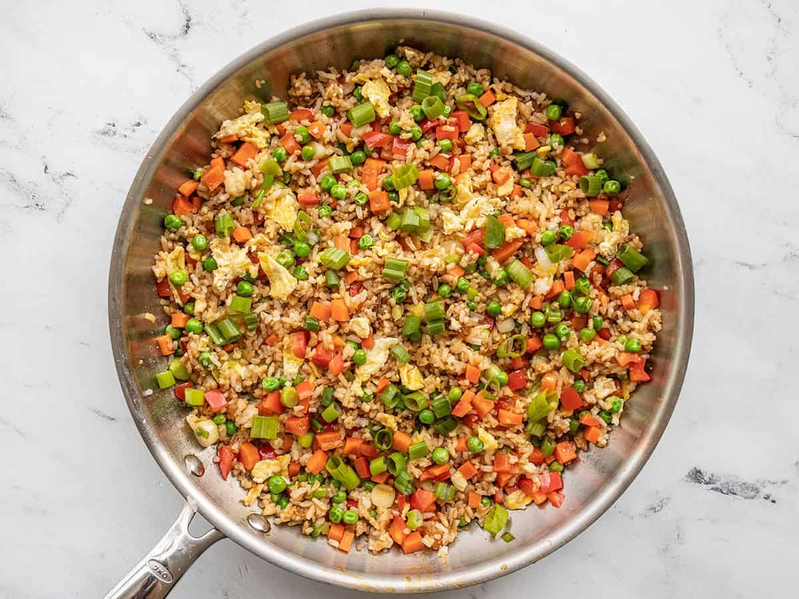

Vegetable Fried Rice

Preparation Time: 20 minutes
Difficulty Level: Easy
Ingredients:
- 2 cups cooked rice
- Mixed vegetables (carrot, beans, peas)
- 2 tbsp oil
- 2 cloves garlic
- Soy sauce
- Salt and pepper
Step-by-step Instructions:
- Heat oil in a pan.
- Add chopped garlic and sauté.
- Add vegetables and cook for few minutes.
- Add cooked rice.
- Add soy sauce, salt and pepper.
- Mix everything properly.
- Cook for 5 minutes and serve hot.